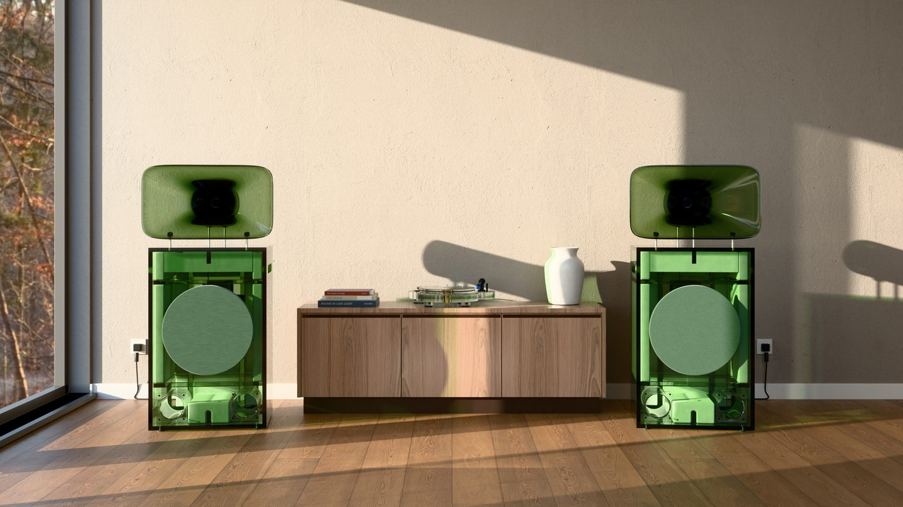

A proposal for Ace Hotel Group · draft · confidential
A proposal for Ace Hotel Group · draft · confidentialA listening corner for one Ace lobby.
EARF makes hi-fi and light in San Francisco, in cast acrylic tinted all the way through, in eight colours from Ember to Smoke. Tropos is a powered horn loudspeaker; Mantle, a record player whose plinth floats over a base lit at its edge; Hemisphere, a pendant; Core, a cordless table lamp. The first pair of Tropos played for the first time at our debut in San Francisco on 19 January 2027, in FOG Design+Art week.

Render · replaced by a photograph from the debut before sendingWhat we proposeA season-long EARF listening corner in one Ace lobby: a numbered pair of Tropos, a Mantle record player and Hemisphere pendants, in a tint chosen for the room, with listening sessions through the season. It starts as a residency and becomes a purchase if it works for Ace. Beside it, an Ace × EARF edition of Core, our cordless lamp, for the rooms or the shop.
Why Ace Hotel Group- Ace has treated sound as part of the building: Devon Turnbull built the lobby system at Ace Hotel New York.
- Tivoli made a co-branded radio for Ace Sydney’s rooms; Ace set the brief and the silkscreen.
- Elsewhere, hotels now commission listening rooms: OJAS’s Listening Room at Patina Osaka; the Equipment Room at Hotel Magdalena, Austin, with Klipsch.
- A corner is smaller than a room: one season, one tint, no construction.
Ace Hotel Group brings- The lobby, and the guests in it
- The programme: who plays, and when
- Its shop, for the Core edition
- Photography and its own channels
EARF brings- The system: Tropos, Mantle, Hemisphere, installed and tuned
- The Sessions: one album, start to finish, on set nights
- Core in an Ace tint, numbered
- Service through the season
 Terms in outline · the timeline
Terms in outline · the timelineHow it could work.
An outline to discuss, not an offer. The ranges are those typical in published sources for licensed and
co-branded design (furniture, lighting, consumer products); none of it is agreed, and every line is for counsel.
| Term | In outline |
|---|
| Residency | A season (about three months): EARF installs and services; Ace hosts and programmes. A residency fee or a loan [to agree]. for counsel |
| Purchase | At the end, Ace may buy the corner: 50% on order, the balance on installation, as commissions usually run. for counsel |
| Core edition | Ace buys a numbered run (for example 100) at wholesale, about 40–50% of retail. for counsel |
| Co-brand | “Ace × EARF” on the Core edition, under a licence of 1–3 years; each approves the other’s use of its name. for counsel |
| IP | EARF keeps the design; a credit line such as “The Listening Corner by EARF”. for counsel |
| Care | Insurance and liability for loaned equipment in a public lobby; a service contract if bought. for counsel |
| Prices | A suggested retail price for the shop only: no resale price set (California). for counsel |
When.
| From the debut | What |
|---|
| The debut, 19 January | The pieces seen working, photographed |
| 2–5 weeks after | This letter, with the photographs (February) |
| About 12 weeks after | A meeting in Milan, 13–18 April, or at the property |
| Mid-2027 | The residency opens, in a city Ace chooses |
| With the Core run | The Ace edition of Core, numbered (est. autumn 2027) |
What we’d send next
Photographs and a short film from the debut; drawings of the parts we’d
design; samples of the eight tints in cast sheet; an edition sheet with sizes, colours and lead times.
What stays EARF’s own
Tropos, Mantle and the tint system. An edition is designed around them
and licensed for its own run; nothing here licenses EARF’s products or its colours beyond it.
Who
[Your name], founder, EARF, San Francisco. [contact line].
Through business@acehotel.com (Atelier Ace business inquiries); press@acehotel.com in copy.